Four decisions before the Tracker's fixes are built. Each has my recommended answer in green. The progress graph is not here; it waits for your word.
How to answer: reply with the letters, for example 1A 2A 3A 4A, or just as recommended. Tap any picture to see it full size. Orange numbered boxes only point; they are not part of the app. A picture marked drawn in shows a proposal, not the app as built.
Question 1 · Marking a student
Is what the marking pop-up keeps already the "attempt history" you asked for?
Your old note asked the Tracker to remember a student's earlier tries at an event, not only the latest grade. Since then, the pop-up keeps every failure with its own day (ST-02 on 3 Oct, ST-02X on 10 Oct), the day the event was finally done, and who marked it. The Failures card lists them too.
A
Yes, that is the history. Close the note.Recommended
A student's tries are his failures and then his pass, and each already has its day. A grade changed later (DPCO to DCO) is a correction, not another try. A second list would repeat the same facts in a pop-up that members mostly use on phones.
B
Also list every earlier grade with its day.
For example "DPCO 3 Oct → DCO 10 Oct" under the buttons. More to read in the pop-up; small to build.
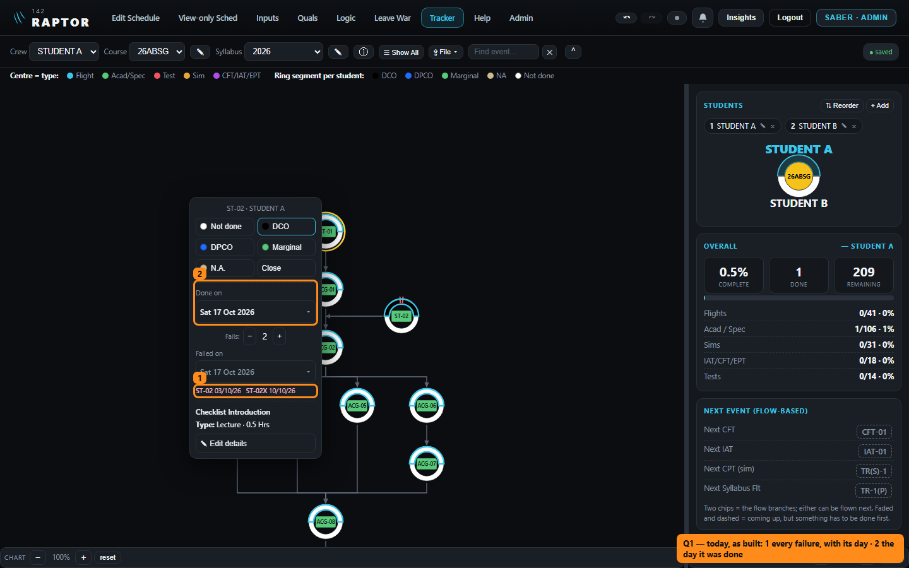
Desktop, as built: 1 each failure with its day · 2 the day it was done
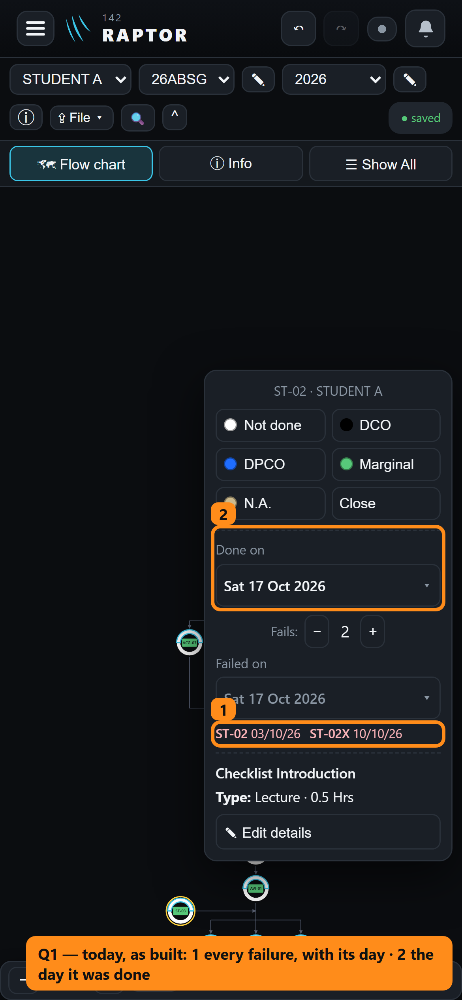
Phone, as built
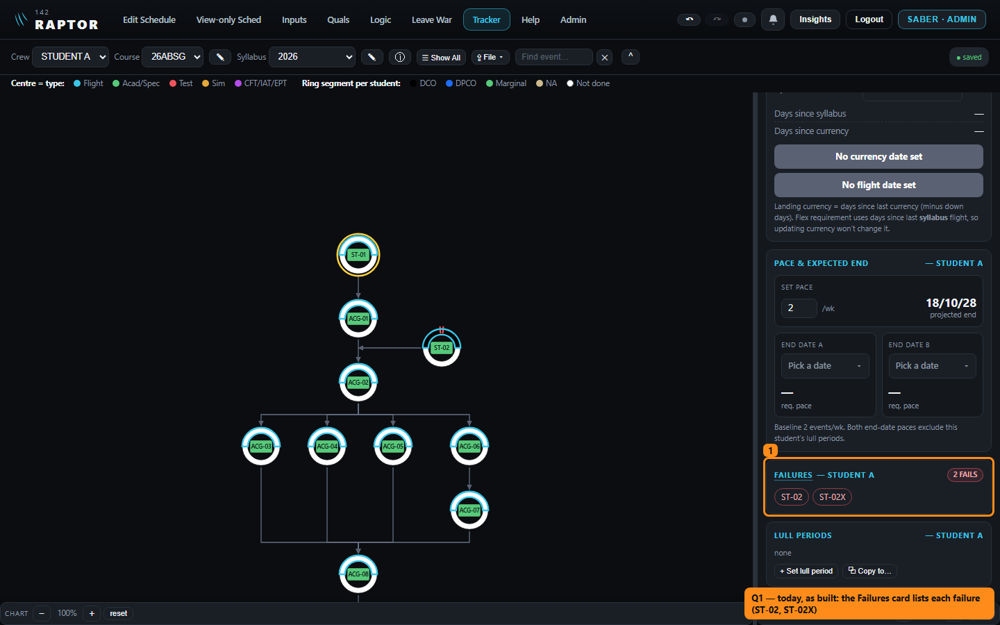
The Failures card, as built (bottom right): ST-02, ST-02X
Question 2 · The chart by keyboard (desktop)
How should the keyboard move around the chart?
Today none of the chart's 210 events can be reached by keyboard. You need a mouse or a finger to open one and mark it. Schedulers mostly work at a desk, so this is about the desktop.
A
Tab once into the chart, then the arrow keys follow its lines.Recommended
→ goes to the next event along the line, ← back to the event it needs first, ↑ ↓ to the event above or below. Enter opens the marking pop-up with the keyboard inside it, and Esc returns to the same event. It follows how the chart is read, and the event the keyboard is on wears the app's plain blue ring.
B
Tab through every event, one press each.
About 210 presses to cross a chart.
C
Leave the chart to mouse and finger.
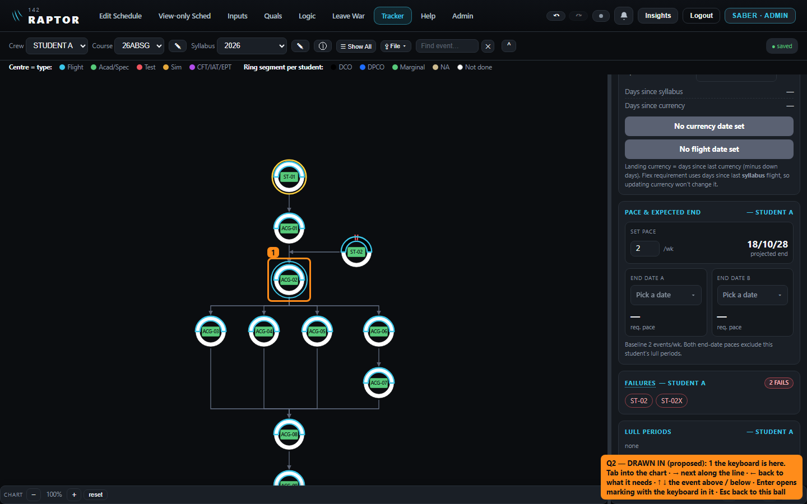
Drawn in: 1 the keyboard is on ACG-02; → would go to ACG-03…06 along its lines, ← back to ACG-01
Question 3 · A man posted out and deleted
Which Tracker courses does a deleted man leave?
Your rule of 27 Sep (D299): when a man is deleted through Post out, his place on any course still running goes, and his record from courses he finished stays. The Tracker has no notion of "still running", so today his name simply stays on every course as plain text.
Example: RECON is on course 26ABSG with 150 events still to do, and on an older course where every event is done. He is posted out and deleted.
A
He leaves every course where he still has events to do; his record stays on courses he finished.Recommended
In the example he leaves 26ABSG and stays on the older course. It is your own split from D299, read from his marks rather than from a date someone has to keep up to date.
B
He stays on every course, as today.
Your D299 would be narrowed to say so.
C
He leaves a course once his own End date B has passed.
It depends on End date B being filled in for every student.
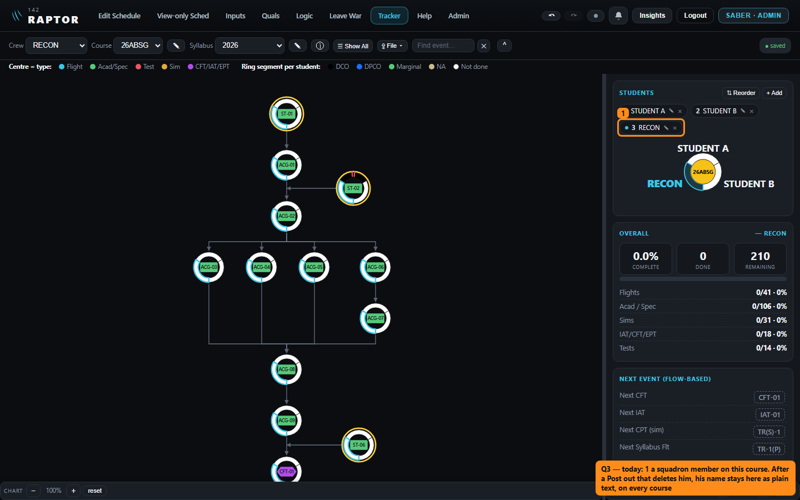
As built: 1 a squadron member on the course (the dot means he is linked to the squadron roster)
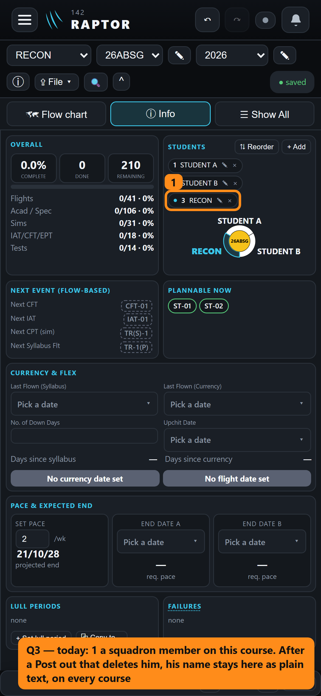
Phone, as built
Question 4 · Currency & flex
Dark words on the green, amber and red bars?
The bars under Currency & flex print white words on their colour. On green and amber that reads at about 2 to 1, where 4.5 to 1 is the usual floor for easy reading. On red it is 3.4 to 1.
A
Dark words on green, amber and red; white stays on the grey bar.Recommended
The same recipe Raptor's own amber chips use. The colours and the words stay as they are.
B
Keep the white words.
As built: green "Landing Current" and amber "1 Optional Flex", white words
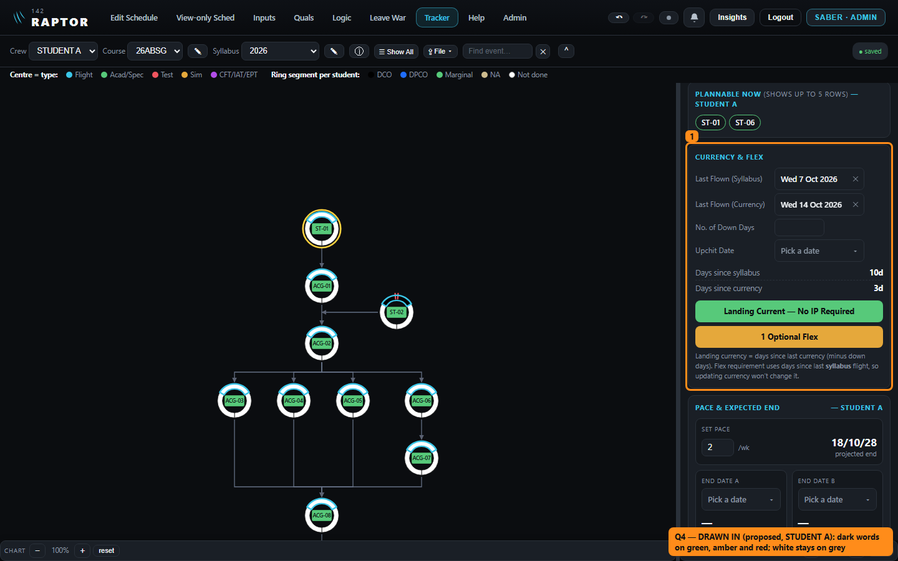
Drawn in: the same bars with dark words
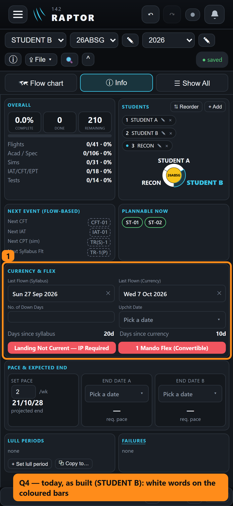
Phone, as built: two red bars
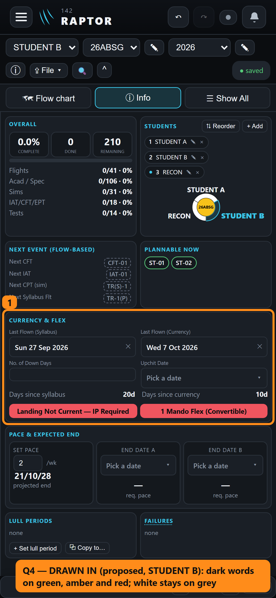
Drawn in: dark words on red
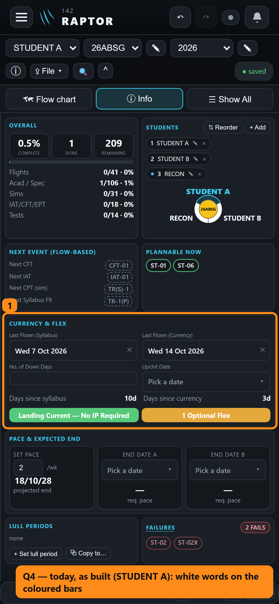
Phone, as built: green and amber
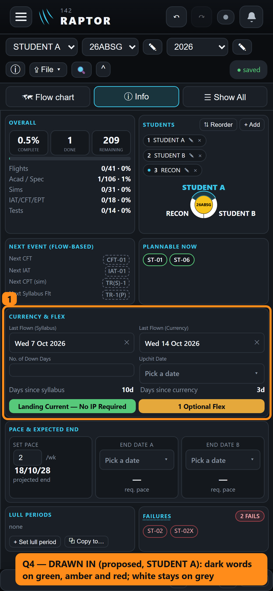
Drawn in: dark words
Also in the batch, no question needed
These are faults with an obvious fix. Each one you can see gets a before-and-after picture on the batch's closing look, before you say "merge live".
After you move a ball in Edit chart layout, one mouse-wheel step zooms twice, then three times, and so on.
A ball dragged left of or above the chart's start is cut off, and ⤢ Fit cannot bring it back.
Coming back to the Tracker, the chart lands at its top corner instead of on the student's last mark.
A longer student name on the left of the Students card's ring is cut at the card's edge.
Inside Raptor, when a save fails, the Tracker's corner still says "saved".
Three fixes nobody sees: an Import saved as one piece, an undo that stores nothing extra, and tests for the chart editor's refusals.
Next round
When a file's students point at a chart the file doesn't carry, Import says they were "saved by an older version". That's the wrong reason, and the wording is yours to decide (picture below).
Your iPhone look at the pinch-zoom fix on the chart.
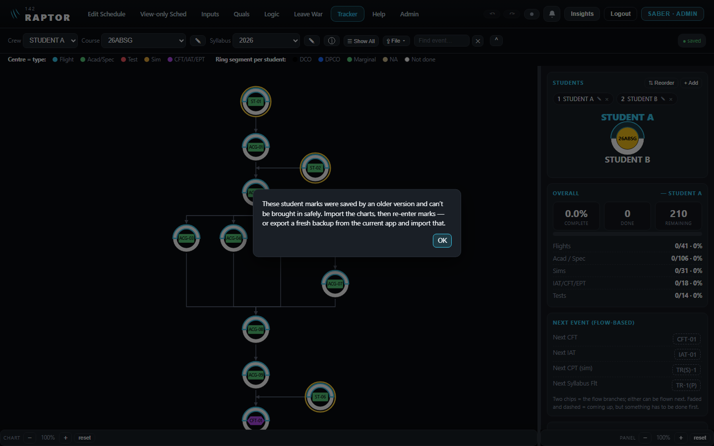
As built: the wrong reason, shown for a file of today's version
Reply with:1A 2A 3A 4A (or your letters), or as recommended.